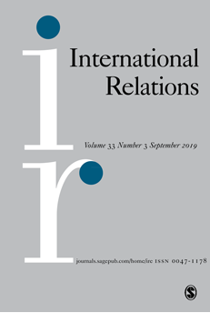

收录于合集
作品简介
【作者】 Alan Collins是英国斯旺西大学国际关系学教授，研究兴趣主要集中在国际规范和安全共同体，已出版三本与东南亚研究相关的著作。
【编译】 金磊（国政学人编译员，北京大学国际关系学院博士生）
【校对】 徐垚晟
【审核】 杨艺华
【排版】 马璐
【来源】 Collins, A. (2019). W(h)ither the Association of South East Asian Nations (ASEAN)? W(h)ither constructivism? Fixity of norms and the ASEAN Way. International Relations , 33(3), 413–432.
期刊介绍

International Relations（《国际关系》）是国际关系领域的知名期刊之一，由SAGE出版社与大卫·戴维斯纪念研究所（David Davies Memorial Institute）联合出版。
东盟路（弱）在何方？ 建构主义路（弱）在何方？规范的固定性与东盟方式
W(h)ither the Association of South East Asian Nations (ASEAN)? W(h)ither Constructivism? Fixity of Norms and the ASEAN Way
Alan Collins
内容提要
本文通过对建构主义和东南亚国家联盟（东盟）的发展方向（whither）和健康状况（wither）的反思，揭示了规范的固定性及其争论。本文的观点是，东盟所建构的规范创造了一个基于共识的固定参数。虽然参数是固定的，但在参数范围内，规范的意义和具体实践可以再讨论。这一观点有助于弥合传统建构主义和批判建构主义之间的鸿沟，并表明放弃东盟方式才能实现共同体建设这一前提是有缺陷的。得出这一论点依赖建构主义文献对规范退化的洞察，争论并非规范的生命周期的一部分，而是永伴其间。规范的争议性和固定性并存，实践理论证明社会世界在变化的同时也是延续的。在2017年东盟50岁之际，东盟的案例研究及对其建构的规范（东盟方式）的反思意义非凡。
文章导读
一、导论
本文中，确定建构主义和东盟的健康与方向是通过解释：规范和规范的固定性。 规范的固定性是指：不同的行为体承认存在由实践构成的一种特定的有意识的或无意识的组织性社会活动，并以此建立了规范的固定参数（fixed parameters）。作者通过引入固定参数的概念，意图说明参数本身并不是当前问题必须研究的变量。 在参数范围内，规范是什么及其实践，都可以再讨论。 正是这种定义的模糊性，使得规范更具弹性，为争论提供了场所。尽管建构主义分为传统阵营和批判阵营，但随着规范文献的发展，解释规范的方式会越来越接近。
文章首先描述了传统建构主义和批判建构主义的异同，然后通过“规范退化”解释的模糊性使规范更具弹性。规范既是共识也是争论，正是这种联系使得规范既固定又模糊。东盟方式固定于其建构的规范，但规范的意义和适用可以再论。这不仅有助于传统建构主义和批判建构主义方法相辅相成，也解释了为什么对建构规范的争论不是东盟方式的退化，而是东盟方式适应不同环境的表现。
二、建构主义弱在何方？
从互动中产生的共同理解被称为规范，而 规范在多大程度上成为 “固定的”、“硬化的”、“具体化的”就是传统建构主义和批判建构主义争论的关键。
传统建构主义的主要错误在于，太过沉迷于对理性解释的实证主义。 作为规范的倡导者（entrepreneur），建构主义学者通过各种论坛和机构来说服各国接受新的理解，而说服的结果将决定新规范的出现是成功还是失败。是否成功将取决于许多因素，包括那些超出行为体控制能力的因素，例如发生辩论的背景。如果规范倡导者成功了，那么规范的被接纳程度将达到一个临界点，并且随着国家采用规范出现一个级联效应。保护责任（Responsibility to Protect，R2P）规范就是一个很好的例子，说明了一个不断变化的背景——冷战后人道主义干预的增加——为挑战一国不受其他国家干涉其内政的普遍观点创造了有利的条件。这种传统建构主义解释的问题在于忽视了规范的变化，即：一旦形成了一种规范来指导国家的行为，只要没有新的规范出现来挑战它，该规范就会一直约束国家，国家有义务按照该规范行事。
对于批判建构主义者来说，规范并不能规范行为，而是国家互动的产物，永远都在被解释和重新解释。 争论不是规范生命周期中的一个阶段，而是对国家在对话时所参与的相互作用的描述。R2P并不是僵化的，而是永远伴随着激烈的争论。如果行为体按照规范行事，这反映了他们的解释，而且很可能会受到其他的质疑。因此，规范不是统一的共同理解的产物，而是各国为了解自己所在的世界以及参与其中而借鉴的信念或实践。正是这种通过国家互动进行解释和重新解释的过程，使批判性建构主义理解了为什么规范会发生变化。
虽然这两种立场有分歧，有不同的认识论。但作者认为，实际上存在一种中间立场，使双方都能从对方的观点中获益。
三、建构主义路在何方？
目前关于规范的文献越来越侧重于那些没有被采纳或消失的规范。也就是说，规范既不是固化的也不是非固化的，表明竞争不是规范的生命周期的一部分，而是持续贯穿于规范的各个阶段（传统建构主义）或相互作用（批判建构主义）之中。共同的理解并不意味着一种具体的、甚至是一致同意的理解，而是一种模糊的、可能不连贯的理解。例如，一个国家认同有其意义，许多人都认同它，但当仔细审视它的意义，比如英国人或希望生活在英国的移民应该学习英国价值观时，接下来的讨论显示出更多的偏离而不是一致性。这种认为共同理解的含义可能不同的观点揭示了一种模糊性，弥合了传统建构主义和批判建构主义之间的鸿沟。为什么？因为它符合 批判建构主义对争论和解释的关注，但同时也满足传统建构主义的解释：规范越模糊，就越有弹性 。
总之，模糊性使规范更有弹性，有助于缩小分歧的差距的方法是将注意力集中在规范模糊性产生的争议上。
四、分歧性制度
这种模糊性对于将规范理解为区域组织合法性的来源有何影响？如果成员一直在争论组织规范的含义和适用范围，那么组织很可能没有方向也没有太多的未来。答案在于 “分歧性制度”（agonistic institutions）。分歧主义认为辩论是有价值的，但辩论和讨论的目标不应是达成共识和一致，而应是赋予不同立场权力，并提供一个可以面对分歧的舞台。分歧性制度为这场辩论提供了一个舞台，揭露参与者的理解，使争论变得可见，最终使参与者能够共享有争议的理解。从本质上讲，我们同意规范，但我们保留根据当时的情况就其含义和适用范围进行讨论的权利。 这一点在案例研究中变得显而易见，东盟正是一个分歧性制度。
五、案例研究—作为分歧性制度 的东盟
东盟有10个成员国，成员国通常分为冷战和后冷战成员国（加入时间在冷战结束之后），后冷战成员国的缩写是CMLV（柬埔寨、缅甸、老挝和越南）。正是由于需求趋异的成员国的数目增加和东盟日益制度化，人们对东盟方式的有效性和调整方式如何更好地反映东盟面临的挑战产生了疑问。然而， 将其解释为规范退化是误解了构成东盟方式的规范的固定性及其争论。
东盟方式是什么？东盟方式描述了成员国之间的接触过程，强调非正式和协商一致，避免对其他成员国内政的不必要干涉。 与西方的决策相反，东盟方式往往避免使用对抗性姿态、多数投票和法律治理结构来解决争端。东盟方式旨在确保某一成员国在讨论中不会公开羞辱其他成员国，使得所有成员国都能挽回面子。东盟本质上是政府间组织，东盟方式是独立主权国家能够在熟悉的、没有威胁的环境中合作的进程。正是这种熟悉感支撑了东盟所倡导和象征的友谊感——后者在东盟公开会议上进行的例行交叉握手中最为明显。
最具戏剧性的例子发生在2012年7月，当时外交部长们在历史上第一次未能就公报文本达成一致，进而没有发表公报。问题的症结在于，会议过度提及南中国海有争议的岛屿，并且主席国柬埔寨更担心得罪中国，而不是与东盟的同事们（尤其是越南和菲律宾）达成妥协。据新加坡外交部巡回大使比拉哈里（bilahari kausikan）表示，这是一个东盟成员国无视地区利益的最令人震惊的例子。马来西亚就2017年罗兴亚危机向东盟公开指责，进一步印证了这种成员国分裂的印象。
批判建构主义方法所能揭示的，不是对这些问题的回答，而是对问题本身的问题化，即反思东盟方式是什么。 东盟方式不是一套固定的指导实践的规范，而是由公认的、可接受的、可作为明显分歧场所的建构规范组成。 这不是一个有待解决的问题，而是东盟如何处理内部紧张局势的一个重要部分。这一点可以从东盟如何回应马来西亚公开要求退出以东盟名义发布关于罗兴亚危机的声明中看出。然而，只有理解共识意味着什么，才能理解发生这场争论的因素。
1. 共识
**对共识的理解体现在东盟减 X（A-X）公式中，如果存在一个分歧点，那么这个问题就会搁置，直到分歧停止。**也就是说，只要不遭到成员国反对，东盟就可以做出一个倾向部分成员国偏好的决定。东盟没有要求所有成员同意参加，也没有给予一个成员否决权。通过一个协商进程，反对的一方将得到保证，其关切将得到尊重。作为回报，它不会阻止其他各方继续。反对并不意味着疏远，通过协商达成共识确保东盟在如何管理所有成员国的愿望方面团结一致。在赞成和反对的情况比较均匀的情况下，发表宣言并附一份声明并不罕见。虽然宣言中可能包含经常出现矛盾的段落，表明成员国内部的不同立场，但该声明是用来澄清的一种特殊解释形式。例如，在2012年通过《东盟人权宣言》（ASEAN Human Rights Declaration ，AHRD）时，宣言还附有《金边声明》（Phnom Penh Statement），该声明试图反驳对东盟人权宣言未达到国际人权标准预期的指责。在不止一人反对、再多的协商也无法解决关切的情况下，协商一致就等于休会。因此，对共识的这种理解创造了广泛的参数范围，使争论得以展开。
2. 不干涉
重要的是要认识到，2017年罗兴亚危机并非例外，不干涉原则优先于其他原则。1997-1998年的亚洲金融危机也引发了对东盟前景的质疑，在这种背景下，不干涉成为争论的焦点。在这种情况下，这一争论以灵活的参与为幌子，由泰国当时的外交部长和未来的东盟秘书长苏林·匹苏万（Surin Pitsuwan）于1998提出。不过，苏林坚称，他不想取代对灵活接触的干预，而是调整其意义，以更好地反映东盟国家日益相互依赖的环境。他的提议仍然符合不干涉的核心支持作用，通过谈判和协商，东盟达成了“加强互动”的共识。因此，不干涉仍然是一种建构性的、根深蒂固的、固定的规范，但其含义及应用也在不断地改变以反映成员国所处的普遍环境。
3. 非正式
这种对东盟方式的争论也可以从另一个构成要素，即非正式中看到。非正式最初是指东盟不常举行东盟国家领导人的会议，即东盟缺乏体制基础。不过，东盟自1976年起在雅加达设立了一个秘书处后，现在每年主办数百次会议。非正式原则当然不再是不经常举行正式会议的缩影，而只是非正式原则的表现。非正式原则体现了东盟的不具约束力和不具法律效力的程序，这些程序共同避免了在国家政府以外的任何地方执行东盟行动计划的权力。在《东盟宪章》中，成员国给了东盟一个法律和体制框架，对此的一种解释是，法治以及维护法律的机构应该作为东盟的新运作方式与东盟方式并行。《宪章》于2007年通过，但其几乎没有改变过。这个事实表明，对在东盟传递法律人格的实际含义缺乏明确性。然而，正是这种模糊性创造了争论的场所，各种提案正在被提出和讨论，范围从东盟司法机构的正式化，到就区域法律标准达成共识，再到监督东盟行动计划的遵守情况。东盟规范分歧的历史不应被理解为成员国不遵守组织规范，而是东盟非正式原则的又一体现，因为东盟的规范在不断调整以反映其追求共同体建设愿望的后宪章环境的变化。
六、 结 论
建构主义与东盟何去何从？对这两者来说，肯定有一个归处。如果说一个理论的优势在于它具有长久的生命力，并且可以被几代学者和政策制定者所用，那么建构主义的线索就是复制广泛的教会方法（church approach），这种方法非常好地服务于现实主义和自由主义。现实主义是分裂的，从行为现实主义者到结构现实主义，再到进攻和防御现实主义。对许多人来说，新自由主义的制度主义转向似乎抛弃了太多的自由主义，比起自由主义的一个分支，更像现实主义。传统建构主义和批判建构主义都相信世界是由社会建构的，从这个起点开始，许多争论就可以开始，包括理论的目的到底是什么。在这篇文章中， 当涉及到规范的固定性和引导潜力时，传统和批判建构主义都有空间；在实践和习惯所建立的参数范围 内 创造了一种共同的理解，争论是常态，因为 争论 揭示了日常的谈判和说服过程，这就是政治。因此，争论不仅揭示了对规范的不同解释，而且争论的边界也揭示了什么是没有争议的。
**东盟成立 50周年之际，与历史上任何时候相比，都不会变得无足轻重；它没有衰落。**关于东盟方式是否有能力支撑一个东盟共同体的实现的讨论，实际是对东盟方式的含义和适用的争论。东盟面临危机，不是因为它的成员国没有按照东盟方式行事。尽管有人质疑，但这就是正常的运作方式。一个扩大的、两层的东盟存在使得这种论争以不同的形式出现，但这正是成员国对东盟方式参与的表现，这意味着东盟政治家过去和现在都是熟悉的。东盟的前进方向是不确定的，因此，拥有建立东盟共同体雄心的东盟将走向何方是一个问题。
_ ** _ ** _ ** _ 本文由国政学人独家编译推荐**__
扫下方二维码查看往期精彩
【新刊速递】第01期 | Review of International Studies Vol.45, No.4, 2019
【新刊速递】第02期 | International Relations Vol.33, No.3, 2019
【新刊速递】第03期 | International Organization Vol.73, No.3, 2019
【新刊速递】第04期 | World Politics, Vol.71, No.4, 2019
【新刊速递】第05期 | European Journal of International Relations
分类导览 1
分类导览 2
点“在看”给我一朵小黄花